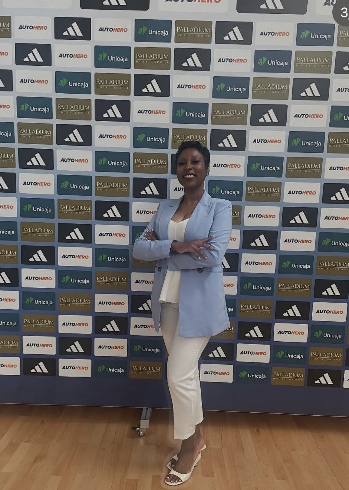

MEET THE
FOUNDER
Zaiditu Y. Persaud founded KENAME Sport around one question: "What if women's football fans didn't have to experience the beautiful game alone?"
That question became the foundation for KENAME, built on the belief that sports tourism, digital storytelling, and fan engagement initiatives can create more ways for audiences to connect with women's football.
Raised in Newark, New Jersey, Zaiditu developed a love for the beautiful game at an early age. Her connection to football has taken her from the stands to the press box as a credentialed journalist, across matchdays and international tournaments, and into building a brand that draws fans closer to the game.
